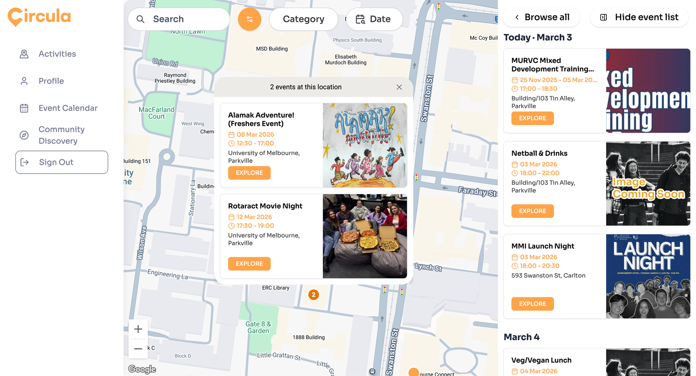
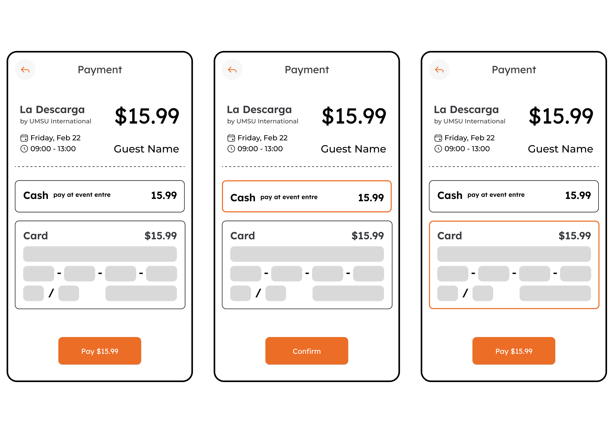
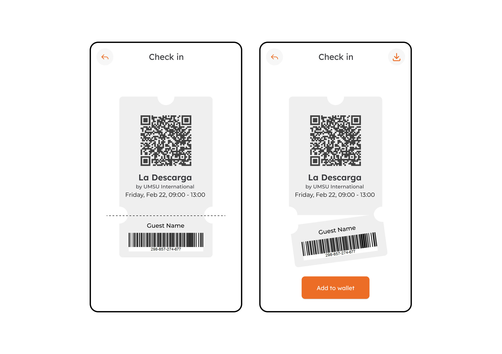
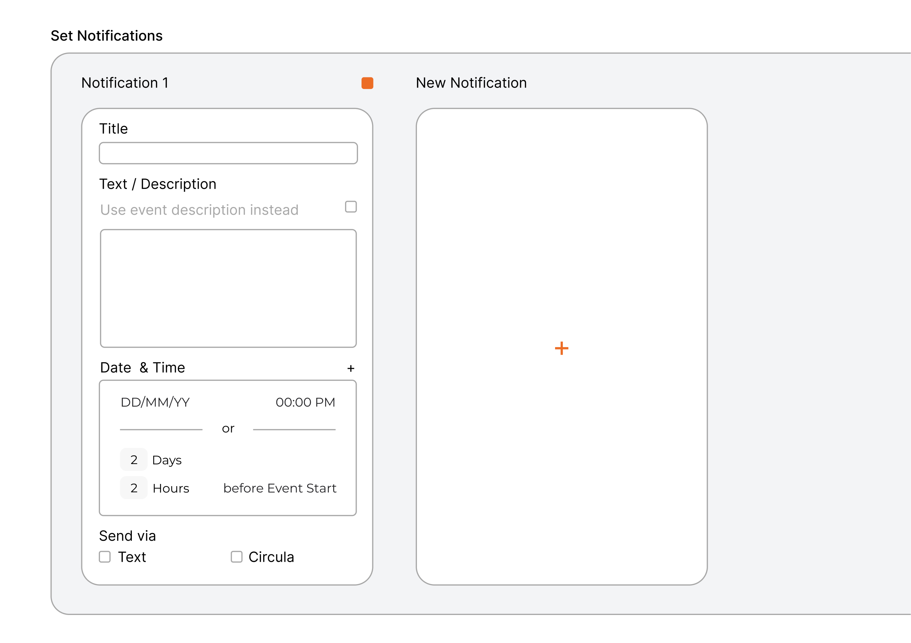
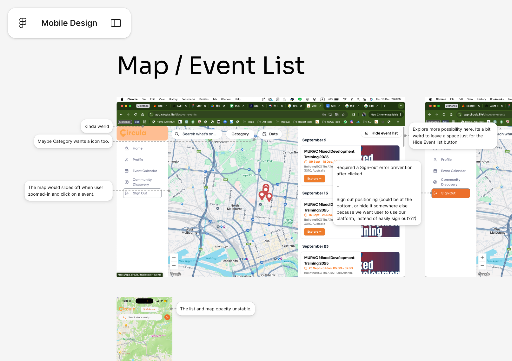

projects

projects
Circula focuses on website and mobile map based application, integrating university clubs and events. I am part of the UX team to design app mockup, layout, making design decision, and conduct user testing. We have launch the first public release on Feb 26th in 2026, and the UX design team has move on to user testing and new feature designs after first launch.
Circula is a student startup founded by Mia Casey and lewis ??? around 2025. It is an app connect clubs and university student to get easy access to and participate club and school events.
Circula mainly offers a map view for user to discover event, social feature to connect people and friends, and calendar to manage events time and schedule.

Payment comes in after all other design task has been first drafted, when we develop for more features, payment was one of them.
One takeaway from this task I appreciate is the importance of information continuation. When I first design the payment page, I left information outside from the page itself, and I realised user might find it difficult to recall or recognise which event is it paying for. I added the event name and host club information in addition to the first draft design.

I was quite struggle with this task, because I want to make the ticket process connects to reality, for user to feel like they are actually taking a ticket for entry.
The design is inspired by the ticket animation in an app called FocusFlight, where people are manipulating got onboard to an aircraft for focus and be productive. I really like the process of sliding / verifying ticket, and I think Circula could implement similar idea to enhance user engagement.

I worked with another designer on this task, where we have several iteration through the design process, and this is the final decision.
The biggest change / iteration is around the Date & Time. Circula uses standard API for date and time on other feature, we explore a different layout and options for user to select time, also offers a thoughtful option for user to push notification certain time before the event.

One important task I in charge of was designer heuristic review. I walked through as many as features in Circula in both laptop and mobile and come back with objective review on any clutch, bug, or unpleasing visual design. I really enjoy this process due to I will have a chance to review the whole app again with a user perspective, but also keep designer’s mindset during the process. I find myself comfortable and sometimes I can catch something that I didn’t pay attention to.
